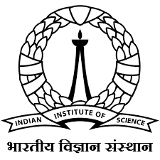

Ph.D. in Electrical and Computer Engineering – University of Florida
Aug 2023 – Present
About Me
Researcher in AI, digital pathology, and biomedical foundation models.
Education
-
-

Master’s in Artificial Intelligence – IISc, Bangalore Aug 2020 – Jun 2022
Research Experience
-
Graduate Research Assistant – CMIL, University of Florida Aug 2023 – Present
• Developed and evaluated histopathology foundation models for kidney digital pathology
• Developed prognostic models using pathomics for lupus nephritis
• Applied self-supervised learning, MIL, and vision-language models to multi-modal biomedical data -
Junior Research Fellow – SPECTRUM Lab, IISc 2021 – 2022
• Worked on explainable deep learning for OCT image analysis
• Applied computer vision and class activation mapping (CAM) for interpretability
Industry Experience
-
 Research Intern – Siemens Summer 2021
Research Intern – Siemens Summer 2021• Developed an explainable active learning pipeline for baggage screening in airports
• Applied explainable AI, computer vision, and ML workflow tools (MLflow, Prefect)